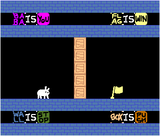

Welcome! Here's a list of games I made.
|  | I Wanna Baba Is You A silly Baba Is You fangame, featuring... gravity! Created: March 10, 2020
Last updated: January 16, 2022 |
| 300 Level Game Heavily inspired by Never Ending Level Game, the goal of this game is to figure out how to go to the next level. This is the first game I made in Godot. As of now, this game only has 20 levels. Created: September 22, 2023 Last updated: October 3, 2023 |
|
| Nanahira Obby :nanasmirk: I really love Nanahira. Like, a lot. Like, a whole lot. You have no idea. Created: August 18, 2024 Last updated: August 18, 2024 |
|
| PuzzleGame (name subject to change) Inspired by all those old internet riddle games, the goal of this game is to figure out how to go to the next level. This game is entirely done with just HTML. As of now, this game only has 20 levels. Created: October 23, 2024 Last updated: December 7, 2024 |
Here are just some random stuff I made when I was trying out a bunch of things:
| 1. stupid platformer i made in godot |
| 2. Raycast demo |
| 3. Collect the fruits |
| 4. Domino Tiling |
| 5. Evil Minesweeper |